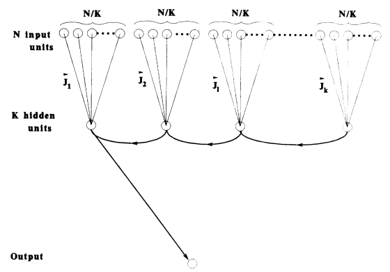
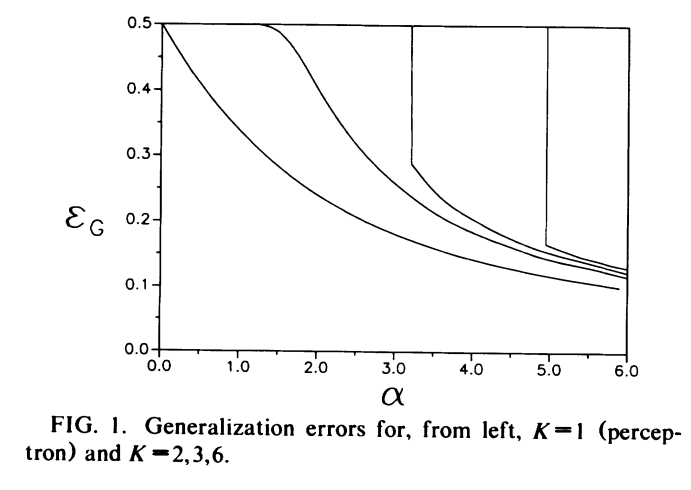

Note: This blog post is still a rough draft. Read on with caution.
In the past couple of posts I’ve talked about some mathematical techniques from statistical mechanics to deal with various forms of disordered systems. These systems arise in machine learning as well, especially in the guise of neural networks: we can think of the spin sites to be inputs of the network, and the interaction couplings are synaptic weights corresponding to the parameters of the network. In the Bayesian neural network setting, all such weights are initialized randomly from some prior distribution, and so we are in a disordered system reminiscent of a spin glass.
I want to focus in this post on a few papers I’m reading on applying these techniques to get results on generalization performance of various neural network architectures.
stat mech of parity machines
The first paper is the 1990 paper of Barkai et al. “Statistical mechanics of a multilayered neural network”. Previous work of Gardner, Derrida, and others studied the problem of determining the maximal capacity of perceptrons– that is, the measure of the perfect retrieval ability of a perceptron network in the high-dimensional limit.
However, the computational capabilities of a perceptron (a zero hidden-layer network) is limited because of its inability to solve non-linearly separable classification problems. Hence we would like to do a similar kind of analysis for multilayer networks.
This paper addresses the problem for simple parity machines, and does a study on the information capacity per synapse/weight, as opposed to just the entire network.

A parity machine has an architecture given by the diagram above. It consists of \(N\) binary input units, a single hidden layer with \(K\) continuous units, and a single binary output. Unlike a fully connected feedforward network, we split the input units into \(K\) distinct sets, and connect each set of inputs to a single hidden unit.
Written out, denote the input configuration as \(\{s_i\}_{i=1,...,N}\) where \(s_i=\pm 1\). The \(\ell\)-th hidden unit state is computed by
\[ h_\ell = \sum_{i=N(\ell-1)/K + 1}^{N\ell/K} J_i s_i \]
which feeds to the binary output
\[ o = \operatorname{sgn}\left(\prod_{\ell=1}^K h_\ell\right) \]
This sign of the product gives rise to the name parity machine for the network. This paper addresses the capacity of this network to memorize input patterns. Consider \(P\) patterns \(\xi_i^\mu=\pm 1\) for \(i=1,...,N\) and \(\mu=1,...,P\), with desired outputs \(y^\mu=\pm 1\). We will be considering random patterns, so that each component of the input and outputs are sampled with equal probability from \(\pm 1\).
Goal: calculate as a function of \(K\) the maximal number of patterns \(P_c\) that can be memorized by the network in the high-dimensional limit \(N\to\infty\).
Gardner’s method for studying this is to consider the volume in weight space occupied by networks with perfect retrieval of the given input patterns:
\[ V = \int_\mathbf{R}\prod_i^N dJ_i \prod_\ell\delta\left(\sum_{i=N(\ell-1)/K + 1}^{N\ell/K} J_i^2 - N/K\right)\prod_\mu \theta\left(y^\mu\prod_\ell\left[\sum_{i=N(\ell-1)/K + 1}^{N\ell/K} J_i \xi_i^\mu\right]\right) \]
By the replica method, we want to compute the typical quenched quantity \(\langle \log{V}\rangle\) where the average is over random input and output patterns. By performing a computation similar to the ones done in the previous blog posts (and almost line-by-line the computation done by Gardner), one gets under the replica symmetry ansatz the saddle point equation
\[ \langle \log{V}\rangle = \operatorname*{extr}_q\left\{ \frac{1}{2}\ln(1-q)+\frac{q}{2(1-q)}+\alpha\int_\mathbf{R}\prod_\ell Dt_\ell\log\left[\operatorname{Tr}_{\tau_\ell}\prod_\ell H(Q\tau_\ell t_\ell)\theta\left(\prod_\ell\tau_\ell\right)\right] \right\} \]
where \(\alpha=P/N\) (standard high-dimensional limit quantity), \(Q=\sqrt{q/(1-q)}\), \(Dt\) is the Gaussian measure, \(H(x)=\int_x^\infty Dx\), and \(q\) is the extremum. The only true parameter here is \(\alpha\), and through this analytical formulation of the volume, the authors determine different regimes for \(\alpha\) in which different saddle points \(q\) arises.
Since the \(q\) arises in the replica method as an order parameter for the replica symmetry (\(q_{\alpha\beta}\) is the correlation function between synaptic weights), we see that the maximum value it attains \(q=1\) will be realizable as a saddle point above when \(\alpha\) reaches its maximal capacity value \(\alpha_c\).
This is intuitive, as \(q_{\alpha\beta}\) measures the overlap between different weight vectors in the space described by the volume \(V\). When \(q=1\), the weight vectors must on average all be the same, which means the volume \(V\) collapsed to \(V=0\), which means above this \(\alpha_c\), there are no parity machines that can fully memorize the patterns.
An interesting observation the authors make is that for \(K\ge 2\) there is a nontrivial stretch of \(\alpha\) (from \(0<\alpha<\alpha_0\)) that no correlations are built between different solutions in weight space. This is not the case for perceptrons (the \(K=1\) case)! They remark that this is due to the representation learning being done in the hidden layer, which along with the gauge symmetries of the parity machine allows for ergodicity to not be broken in weight space in this low-\(\alpha\) regime.
Unlike the case of the perceptron, for large number of hidden units \(K\), the RS solution is unstable, and so the authors turn to the 1RSB solution for the overlap to continue studying. This allows them to get to an expression for the large \(K\) critial capacity
\[ \alpha_c(K) \simeq \frac{\log{K}}{\log{2}} \]
symmetries and ergodicity
This paper by Hansel et al. isn’t very long, but one of the results in here is actually quite cool. They work with the parity machine, as above, but with \(K=2\) hidden units.
Working in the standard student-teacher setup for statistical mechanical analysis of supervised learning, they try and study the generalization error of student networks that perfectly memorize a training set. They show that there is an \(\alpha_*\) (recall that \(\alpha\) is a measure of the size of the training set relative to the dimensionality of the input) such that for \(\alpha < \alpha_*\), student networks exhibit rote memorization without generalization.
They then make an interesting remark: the existence of this phase is a consequence of the inversion symmetry of the weight space. Since we have 2 hidden weights, given a set of weights \(J\) for a student network, the inversion symmetry states that the network with weights \(-J\) has the same training loss, and also belong to the same ergodic component of weight space.
At the value \(\alpha_*\), the symmetry is broken and the networks defined by \(J\) and \(-J\) no longer belong to the same ergodic compnent. This symmetry breaking is what gives rise to generalization behavior in the student networks. The authors then also give evidence that this \(\alpha_*\) is at least the maximal capacity of the \(K=2\)-parity machine, \(\alpha_c(2)\)!
However, as of yet, I have no idea how to understand the breaking of ergodicity in connection to the breaking of this inversion symmetry. Maybe other readings can elucidate this for me?
Added note: Actually, ergodicity breaking isn’t terribly hard to understand. The free energy integral calculation is (via the saddle point approximation) dominated by the sum of the values at saddle points. But note that each distinct saddle point forms a valley in the free energy surface over state space. In the thermodynamic limit (\(N\to\infty\)), these valleys are separated by infinitely large barriers that disallow states in one valley to visit another through thermal fluctuations. This breaks ergodicity.
more learning curves for parity machines
There is this paper by Manfred Opper, about generalization in parity machines. Here they extend the analysis of Hansel et al. above to \(K>2\), and show that there are \(\alpha\)-cutoffs for each \(K\) that below which generalization cannot occur.
Interestingly, this paper addresses the question of generalization of “deep” neural networks by a comparison to the standard-of-the-time, Vapnik-Chervonenkis theory.
As Opper reviews, we define the VC dimension \(d_{\text{VC}}\) to be the size of the largest set of input patterns, for which all of the possible \(2^{d_{\text{VC}}}\) combinations of binary output labelings can be learned by the network. This gives a unnormalized measure of “maximal capacity” for the network. This differs from the capacity \(\alpha_c\) from above in that in the definition of VC dimension we are asking that all possible labelings can be learned, while \(\alpha_c\) asks if it is possible for the network to learn at least one such labeling.
Remarkably, the Sauer-Shelah lemma gives an upper bound on the number of output combinations that can be learned based on \(d_\text{VC}\). As a consequence, in the thermodynamic limit \(N\to\infty\), if the number of input patterns \(m\) exceeds \(2d_\text{VC}\) then we effectively cannot learn the entire dataset. As a consequence,
\[ \alpha_c < 2d_\text{VC}/N \]
giving a relation between maximal capacity and the VC dimension.
The question Opper asks is “is the VC dimension \(d_\text{VC}\) really the main relevant parameter that determines the shape of the learning curve?” As before, we can use the replica method to compute the generalization performance of a \(K>2\)-parity machine. They end up computing generalization curves for various \(K\), as depicted in this diagram:

Here, the non-cutoff parts of the graph follow the generalization error
\[ \epsilon_G \simeq 0.62\alpha^{-1} \]
which shows that the generalization error is independent of the VC dimension! This is sorta a display of the failure of Vapnik-Chervonenkis theory to explain the generalization mysteries of deep networks. The other fun thing they show is that for \(K\ge 2\) there is always a threshold \(\alpha_0(K)\) for which generalization does not occur below it. This is again in contrast to the perceptron!